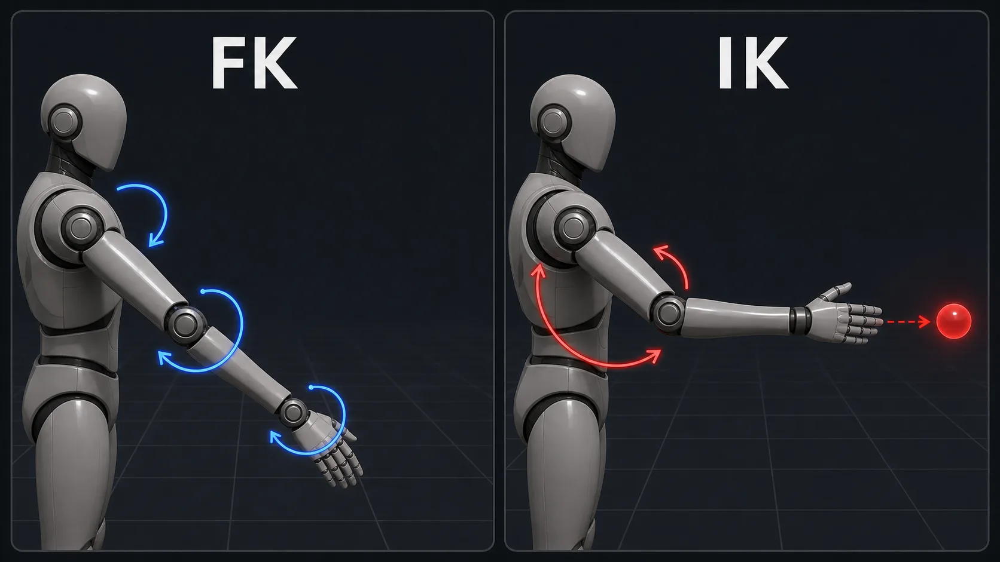
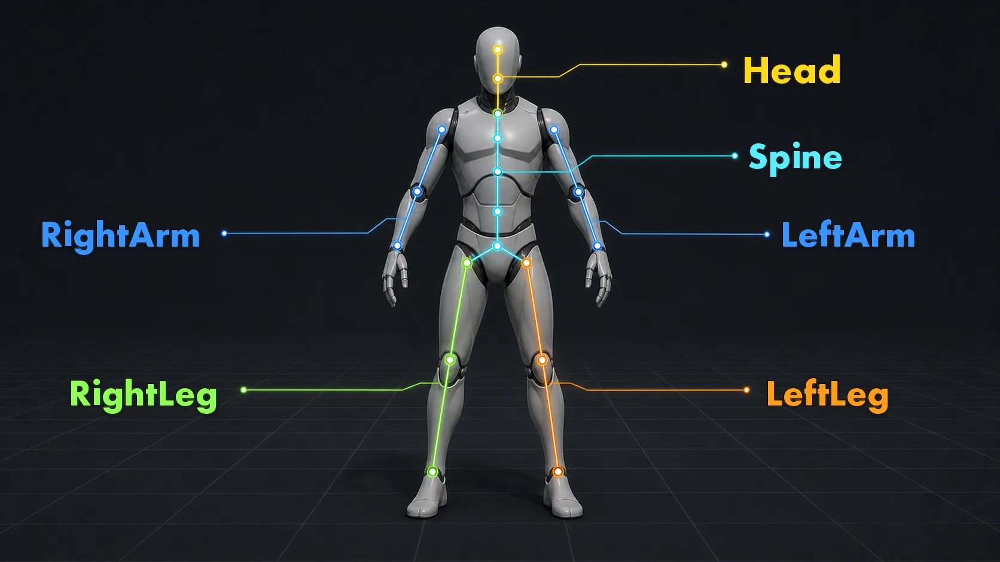
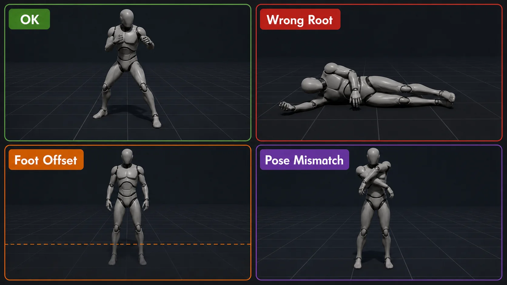

10주차 2교시 — Unreal Import 와 IK Rig 만들기 (학생용)
관련 문서
| 관계 | 문서 |
|---|---|
| 강의 계획서 | 강의계획서: Game Engine II |
| 강의 아웃라인 | 10주차 아웃라인: 애니메이션 리타겟팅 |
| 1교시 핸드아웃 | 1교시: 리타겟팅 개념 + Mixamo |
- Mixamo FBX 2개를 Unreal 5.7에 import하고 네이밍 컨벤션(AS / PA / SK / SM)을 적용할 수 있다
- SK_Mannequin과 SK_Mixamo의 본 구조를 직접 비교하여 매핑 가능성을 확인할 수 있다
- IK Rig 에셋 2개와 IK Retargeter 에셋을 만들어 Walking 애니메이션을 ThirdPerson Mannequin으로 변환할 수 있다
1교시는 에셋 준비였고, 2교시는 그 에셋을 Unreal 로 가져와 매핑 에셋까지 만드는 단계이며, 3교시에 본인이 직접 다양한 동작으로 반복할 한 사이클을 시연으로 보여주는 시간입니다.
- ThirdPerson 템플릿 프로젝트 열기 (또는 새로 만들기)
- Mixamo FBX 2개 import (캐릭터 + 애니메이션) + 네이밍 컨벤션
- SK_Mannequin vs SK_Mixamo 본 구조 실제로 비교
- IK Rig 에셋 2개 만들기 (IK_Mixamo, IK_Mannequin) — Retarget Root + Retarget Chain
- IK Retargeter 에셋 만들기 — 두 IK Rig 매핑
- 변환된 AS_Walking_Mannequin 이 SK_Mannequin 에서 재생됨 확인
IK Rig 매핑 한 번이 가장 무거운 작업이고 그 뒤는 빠르며, 매핑은 한 번이지만 변환은 N번 — 이것이 IK Retargeter 의 실질적으로 가치이고 3교시에 그 N번 변환을 본인이 직접 수행합니다.
Import 와 Skeleton 비교는 다 같이 / IK_Mixamo 는 시연 / IK_Mannequin 은 본인이 직접 / RTG·Edit Pose·Export 는 함께 진행. chain 생성 절차를 한 번은 손으로 끝까지 해봐야 3교시 트러블슈팅이 가능하므로, 막힌 분은 수업용 백업 IK Rig 를 받아 다음 단계로 진행합니다.
1교시 핵심 빠른 점검
| Q | 기대 답 |
|---|---|
| Mixamo 캐릭터 다운로드할 때 Pose 옵션은? | T-Pose |
| 애니메이션 받을 때 Skin 옵션은? | Without Skin |
| 사람 동작을 말한테 옮길 수 있나요? | 아니요, 형태가 다르면 매핑 불가 |
리타겟팅 = 한 캐릭터의 동작을 다른 캐릭터에 전이하는 작업. 가능 조건은 형태 유사성. Mixamo = T-Pose / Mannequin = A-Pose / MetaHuman = A-Pose. 본 이름은 모두 다르지만 위치 대응으로 매핑할 수 있습니다.
1. Import + 네이밍 컨벤션
1.1 ThirdPerson 템플릿 프로젝트 준비
본인 시네마틱 프로젝트가 있으면 그것을 열어도 되지만, ThirdPerson 의 SK_Mannequin 이 프로젝트 안에 있어야 하며 없으면 새로 ThirdPerson 템플릿 프로젝트를 만듭니다 (약 1분 소요).
Epic Games Launcher 에서 새 프로젝트 (필요한 학생만)
- Epic Games Launcher 실행 (작업표시줄 / Dock 또는 시작 메뉴) → 좌측 사이드바
Unreal Engine클릭 Library탭 (좌측 사이드바 두 번째) → 설치된 엔진 버전에서Launch 5.7(노란색 버튼) 클릭- UE 에디터 시작 → Project Browser 윈도우 자동 표시
- Project Browser 좌측 카테고리에서
Games선택 - 우측 템플릿 그리드에서
Third Person클릭 (썸네일에 캐릭터 + 환경) - 우측 패널 옵션 입력:
- Project Defaults: Blueprint (C++ 아님)
- Quality Preset: Maximum
- Starter Content: 켜기 (선택)
- Project Location: 본인 작업 폴더
- Project Name:
GameEngineII_2026_Week10(공백·특수문자 X)
- 우하단
Create(파란색) 클릭 → 프로젝트 생성 + 에디터 자동 시작 (1-2분)
Third Person 템플릿 — Manny / Quinn 캐릭터가 기본 포함
Content Browser 에서 SK_Mannequin 위치 확인
- 에디터 열린 후 화면 하단의 Content Browser 패널 확인 (안 보이면 메뉴
Window > Content Browser) - Content Browser 좌측 폴더 트리에서
Content펼치기 →Characters→Mannequins→Meshes순서로 클릭 - 폴더에 다음 에셋이 보입니다:
SKM_Manny(또는SK_Mannequin) — Skeletal Mesh, 회색 마네킹SKM_Quinn— 또 다른 Skeletal Mesh (선택)SK_Mannequin또는SK_Quinn_Skeleton— Skeleton 에셋PHYS_Mannequin또는 유사 — Physics Asset
- SKM_Manny 더블클릭 → Skeletal Mesh Editor 열림 → A-Pose 자세 확인 후 닫기 (Ctrl+W)
이 캐릭터가 동작을 입힐 타깃이며, A-Pose 로 설정되어 있으므로 별도로 수정하지 않고 그대로 둡니다.
Manny / Quinn 두 캐릭터는 같은 SK_Mannequin skeleton 을 공유하므로, 어느 쪽으로 변환해도 결과는 동일합니다.
1.2 Mixamo 폴더 만들기 + 캐릭터 import
Mixamo 전용 폴더 생성
- Content Browser 좌측 폴더 트리에서
Content폴더에 마우스 우클릭 - 컨텍스트 메뉴 표시 →
New Folder클릭 (또는 단축키Ctrl+Shift+N) - 새 폴더 노드 생성 →
Mixamo입력 → Enter - Mixamo 폴더 더블클릭 → 빈 상태로 진입 (
This folder is empty표시)
import 한 에셋은 모두 이 폴더에서 관리해야 다른 시스템 에셋과 섞이지 않고 나중에 에셋 출처를 추적하기 쉽습니다.
Passive Marker Man.fbx 드래그앤드롭 import
- 윈도우 탐색기 (Win+E) 또는 Finder (macOS, Cmd+Space → Finder) 열기
- 1교시 다운로드한 폴더 (보통
Downloads/) 로 이동 Passive Marker Man.fbx파일을 마우스로 좌클릭한 채 끌어서 — Unreal 의 Content Browser 의 Mixamo 폴더 영역으로 드래그앤드롭- 마우스 놓는 순간 FBX Import Options 다이얼로그 가 화면 중앙에 자동으로 뜸 (배경 어두워짐)
윈도우 탐색기 → Content Browser 드래그 — 가장 직관적인 import 방법
Content Browser 우상단의 + Add 버튼 또는 Import 버튼 클릭 → 파일 탐색기 열기 → FBX 선택. 결과는 같음.
FBX Import Options 다이얼로그 정확히 설정
다이얼로그 화면 구성:
- 상단 좌측: 파일 정보 (
Importing: Passive Marker Man.fbx) - 중앙: 옵션 섹션들 (
Mesh,Animation,Material등) — 펼침/접힘 가능 - 하단:
Import All/Import/Cancel버튼
옵션 설정 (정확히 따라하기):
| 섹션 | 옵션 | 우리 설정 | 비고 |
|---|---|---|---|
| (상단) | Skeleton 드롭다운 | None (기본값) | 신규 skeleton 에셋이 함께 만들어짐 |
| Mesh | Skeletal Mesh | (기본) | 본+메시 묶음 |
| Mesh | Import Mesh | (기본) | 메시 포함 |
| Animation | Import Animations | 체크 해제 | 캐릭터엔 동작 없음 — 켜면 빈 AS 에셋 생김 |
| Material | Import Materials | (기본) | 머티리얼 자동 |
| Material | Import Textures | (기본) | 텍스처 자동 |
이 체크를 해제하지 않으면 빈 Animation Sequence 가 함께 생성돼서 폴더가 지저분해집니다.
캐릭터 import 다이얼로그 — Skeleton: None (신규 생성), Import Animations:
Import All 클릭 + 경고 처리
- 다이얼로그 우하단
Import All(파란색) 클릭 - 진행 표시 (몇 초) 후 다이얼로그 닫힘
- 머티리얼 경고 메시지 박스 가 우상단 또는 화면 중앙에 뜰 수 있음:
Some materials could not be created automaticallyTexture XXX has unknown format
- 무시: 우측
X또는확인 버튼클릭. 메시·본은 정상 import 된 상태.
경고는 텍스처 자동 매핑 실패에 의한 것이므로 무시해도 되며, 메시·본 import 만 정상이면 충분합니다.
Mixamo 폴더 확인 (4종 에셋 생성됨)
Content Browser 의 Mixamo 폴더가 자동으로 새 에셋들로 채워지고, 에셋 종류는 우상단 색깔 막대(노랑/녹색/주황 등)로 구분됩니다.
| 에셋 | 원래 이름 | 우리가 바꿀 이름 |
|---|---|---|
| Skeletal Mesh | Passive Marker Man | SM_Mixamo |
| Skeleton | Passive Marker Man_Skeleton | SK_Mixamo |
| Physics Asset | Passive Marker Man_PhysicsAsset | PA_Mixamo |
| Material(s) | 텍스처/머티리얼 | (그대로 두어도 됨) |
1교시에서 살펴본 prefix 가 여기서 적용되며, 이 실습에서는 SM = Skeletal Mesh, SK = Skeleton, PA = Physics Asset 으로 사용합니다.
Unreal 프로젝트마다 prefix 규칙은 조금씩 다르지만, 이번 10주차 실습에서는 문서 전체의 일관성을 위해 SM_Mixamo 를 Mixamo Skeletal Mesh, SK_Mixamo 를 Skeleton 이름으로 고정하고 SM_ 을 Static Mesh 에 쓰는 팀도 많다는 점만 기억해두면 됩니다.
1.3 네이밍 컨벤션 적용
각 에셋에 대해:
- 에셋 좌클릭으로 선택
F2키 누르기 (또는 우클릭 → 컨텍스트 메뉴 →이름 변경)- 에셋 이름이 입력 모드로 진입 (이름 영역이 텍스트박스로 변함)
- 새 이름 입력 → Enter
- 에셋 참조 갱신 다이얼로그가 뜰 수 있음 → 확인 버튼
| 변경 전 | → | 변경 후 |
|---|---|---|
Passive Marker Man (Skeletal Mesh) | SM_Mixamo | |
Passive Marker Man_Skeleton (Skeleton) | SK_Mixamo | |
Passive Marker Man_PhysicsAsset (Physics Asset) | PA_Mixamo |
공백·한글·특수문자는 사용하지 않기. 영문 + 숫자 + 언더스코어만. UE 에셋명 규칙입니다.
네이밍 prefix 적용 후 Content Browser — 한눈에 에셋 종류가 보임
여기까지가 캐릭터 import 단계의 끝이며, 본·메시·물리 에셋이 모두 같은 SK_Mixamo skeleton 을 공유합니다.
- [ ] Mixamo 폴더에 SM_/SK_/PA_Mixamo 3개 에셋 + 머티리얼 에셋 (이름 그대로 두기) 보임
- [ ] SM_Mixamo 더블클릭 시 T-Pose 캐릭터가 viewport 에 표시됨 (안 보이면 import 실패)
- [ ] SK_Mixamo 더블클릭 시 Skeleton Tree 패널에 본 hierarchy 표시됨 (Hips → Spine →...)
| Prefix | 에셋 종류 | 우리 케이스 |
|---|---|---|
| SM | Skeletal Mesh | SM_Mixamo |
| SK | Skeleton | SK_Mixamo |
| PA | Physics Asset | PA_Mixamo |
| AS | Animation Sequence | (다음 단계에서) |
1.4 Walking 애니메이션 import
이제 동작 데이터를 가져오며, 캐릭터는 이미 import 되어 있으므로 애니메이션은 SK_Mixamo skeleton 에 연결합니다.
Walking.fbx 드래그
- 윈도우 탐색기 (또는 Finder) 에서
Walking.fbx찾기 (1교시 다운로드 폴더) - Content Browser 의 Mixamo 폴더 (캐릭터와 같은 폴더) 로 드래그앤드롭
- FBX Import Options 다이얼로그 자동 표시
FBX Import Options (애니메이션용 정확 설정)
캐릭터 import 와 다른 점은 Skeleton 옵션 명시 지정.
| 섹션 | 옵션 | 우리 설정 | 비고 |
|---|---|---|---|
| (상단) | Skeleton 드롭다운 | SK_Mixamo 명시 지정 | 신규 X, 기존 재사용 |
| Mesh | Skeletal Mesh | (Without Skin 이라 무관) | 메시 데이터 없음 |
| Animation | Import Animations | **** | 동작 데이터 |
| Animation | Animation Length | Exported Time (기본) | 원본 길이 |
| Animation | Frame Range Min/Max | (기본) | 자동 인식 |
Skeleton 드롭다운 사용법:
- 다이얼로그 상단의
Skeleton항목 옆 드롭다운 클릭 - 드롭다운에 프로젝트 내 모든 Skeleton 에셋 목록 표시
SK_Mixamo선택 (Mixamo 폴더에 있는 skeleton)- 또는 검색창에
SK_Mixamo타이핑하여 빠르게 찾기
Walking.fbx import — Skeleton 에 SK_Mixamo 명시 지정
None 으로 두면 또 새 skeleton (Walking_Skeleton) 이 만들어져서 캐릭터와 동작이 서로 다른 본을 가지게 되므로, SM_Mixamo 와 AS_Walking_Mixamo 가 서로 못 알아봅니다.
Import All + 경고 확인
- 다이얼로그 우하단
Import All클릭 - import 진행 (1-2초) → 다이얼로그 닫힘
- 가벼운 경고(머티리얼·텍스처·스무딩 그룹 관련)는 무시해도 됨
- 단,
Skeleton bone count mismatch가 뜨면 무시하지 말고 import 를 취소하거나 진행 확인 요청 - Mixamo 폴더에 새 에셋 1개 생김 —
Walking(Animation Sequence, 녹색 막대)
이름 변경
Walking에셋 좌클릭 → F2AS_Walking_Mixamo입력 → Enter
더블클릭으로 미리보기 + 검증
- AS_Walking_Mixamo 더블클릭 → 별도 탭으로 Animation Sequence Editor 열림
- 에디터 화면 구성:
- 중앙 viewport: 캐릭터 (SM_Mixamo) 가 자동 붙어서 모션 재생
- 하단 timeline: 키프레임 시각화 + 재생 컨트롤 (Play / Pause / Loop)
- 우측 Details: Animation 에셋 메타데이터
- 재생 자동 시작 — 캐릭터가 제자리에서 걷는 모션 무한 루프
- [ ] 캐릭터가 제자리에서 자연스럽게 걷는 동작
- [ ] 사지가 비틀리지 않고 정상
- [ ] 발이 땅에 닿음 (대지 평면 위)
재생이 잘 되면 import 성공이며, 에디터를 닫으려면 탭의 X 또는 Ctrl+W 단축키를 사용합니다.
| 증상 | 원인 | 해결 |
|---|---|---|
| Skeleton 옵션에 SK_Mixamo 가 안 보임 | SK_Mixamo 가 다른 폴더에 있거나 캐릭터 import 가 실패함 | Mixamo 폴더에 SK_Mixamo 가 정상 존재하는지 확인 후 재시도 |
Skeleton bone count mismatch 경고 | 선택한 Skeleton 과 FBX 안의 본 구조가 맞지 않음 | import 취소 후 Skeleton: SK_Mixamo 지정 여부와 Walking.fbx 파일을 다시 확인 |
| 캐릭터가 미리보기에서 깨짐 (T-Pose 로 멈춤) | Without Skin 데이터가 잘못 들어옴 | Mixamo 사이트에서 다시 다운로드 |
| import 후 새 Skeleton 에셋이 또 생김 | Skeleton 옵션을 None 으로 둠 | Skeleton 지정 후 재import |
| 캐릭터가 너무 큼/작음 | Mixamo 와 Mannequin 의 단위 스케일 차 | 우선 그대로 두고 IK Retargeter 단계에서 보정 |
| 캐릭터 import 후 비어있는 AS 가 함께 생김 | 캐릭터 import 다이얼로그에서 Import Animations 체크 안 풂 | 비어있는 AS 에셋 삭제, Anim 체크 해제 후 재import |
애니메이션 import 후 새 Walking_Skeleton 에셋 추가 | 애니메이션 import 다이얼로그의 Skeleton 옵션 None | 잘못 생성된 에셋 삭제 후 Skeleton: SK_Mixamo 명시 지정하여 재import |
2. Skeleton 본 구조 비교 — Unreal 안에서
1교시 슬라이드에서 살펴본 본 이름 비교 표를 이번에는 Unreal 안에서 직접 확인해봅니다.
2.1 SK_Mannequin Skeleton Tree 열기
- Content Browser 에서 SK_Mannequin 더블클릭
- Skeleton 에디터 열림
- 좌측 Skeleton Tree 패널에 본 hierarchy 표시
SK_Mannequin Skeleton Tree — root → pelvis → spine_01..03 → clavicle → upperarm
본 hierarchy 펼쳐보기
- root 노드 펼치기
- pelvis 펼치기 → 그 아래 spine_01, thigh_l, thigh_r 가 보임
- spine_01 → spine_02 → spine_03 → neck_01 / clavicle_l / clavicle_r 로 분기
- clavicle_l → upperarm_l → lowerarm_l → hand_l → 손가락들
- thigh_l → calf_l → foot_l → ball_l
이것이 Unreal 표준 인간형 skeleton 이며, 60-100개 정도의 본으로 구성되어 있고 spine 3단(spine_01..03), 양 어깨의 clavicle, 양 다리의 thigh-calf-foot-ball 구조를 가집니다.
pelvis / spine_01 / clavicle_l|r / upperarm_l|r / thigh_l|r / hand_l|r
확인 후 Skeleton 에디터 닫기 — 탭 X 또는 Ctrl+W.
2.2 SK_Mixamo Skeleton Tree 열기
- Content Browser 에서 SK_Mixamo 더블클릭
SK_Mixamo Skeleton Tree — root → Hips → Spine/Spine1/Spine2 → LeftShoulder → LeftArm
본 hierarchy 펼쳐보기
- Hips (= Mannequin 의 pelvis) 펼치기
- Spine → Spine1 → Spine2 → Neck / LeftShoulder / RightShoulder
- LeftShoulder → LeftArm → LeftForeArm → LeftHand → 손가락
- LeftUpLeg → LeftLeg → LeftFoot → LeftToeBase
이름은 다르지만 구조를 살펴보면 동일합니다. Hips 는 pelvis 자리, Spine 은 spine_01 자리, LeftArm 은 upperarm_l 자리. 위치·역할 매핑 표를 다시 살펴봅니다.
| Mannequin | Mixamo | 위치/역할 |
|---|---|---|
pelvis | Hips | 골반, 본 hierarchy 루트의 자식 |
spine_01 | Spine | 척추 1단 |
spine_02 | Spine1 | 척추 2단 |
spine_03 | Spine2 | 척추 3단 (어깨 분기점) |
clavicle_l | LeftShoulder | 왼 쇄골 |
upperarm_l | LeftArm | 왼 위팔 |
lowerarm_l | LeftForeArm | 왼 아래팔 |
hand_l | LeftHand | 왼 손목 |
thigh_l | LeftUpLeg | 왼 허벅지 |
calf_l | LeftLeg | 왼 종아리 |
foot_l | LeftFoot | 왼 발 |
head | Head | 머리 |
Skeleton 에디터를 두 개 동시에 띄우면 비교가 더 쉬우므로, 같은 부위(왼팔 등)를 양쪽에서 동시에 클릭해 위치를 비교해봅니다.
2.3 참고 — MetaHuman Skeleton Tree
MetaHuman 본 구조도 한 번 봅니다.
MetaHuman Skeleton Tree — spine_01..06 (6단), 손가락 풀 chain, 얼굴 본 다수
| 부위 | SK_Mannequin | MetaHuman |
|---|---|---|
| 척추 | spine_01..03 (3단) | spine_01..06 (6단) |
| 어깨 보조 | 없음 | clavicle 외 보조 본 추가 |
| 손가락 | index_01..03 등 단순 | 각 손가락 metacarpal 까지 풀 chain |
| 얼굴 | 없음 | 100+ 표정 본 |
MetaHuman 의 본 매핑도 IK Rig 절차는 동일하지만, spine 이 6단이므로 chain Start/End 를 spine_01..spine_06 으로 지정해야 하고 매핑이 더 정밀해 시간이 추가로 소요되므로 본 강의에서는 Mannequin (3단) 으로 진행합니다.
같은 인간형의 본은 이름·개수·길이가 달라도 위치·역할이 대응되며, IK Rig 는 이 대응을 에셋으로 명시적으로 적어두는 도구다.
3. IK Rig + IK Retargeter
3.1 IK Rig 가 무엇인가
IK 는 Inverse Kinematics(역운동학) 의 약자로, 보통 애니메이션을 만들 때는 어깨 → 팔꿈치 → 손목처럼 부모 본부터 차례로 회전시키는 FK(Forward Kinematics) 방식이 기본이고, IK 는 반대로 "손이 이 위치에 있어야 한다" 또는 "발이 바닥에 닿아야 한다"처럼 끝점의 목표 위치 를 먼저 정한 뒤 중간의 팔꿈치나 무릎이 그 위치에 맞게 따라 계산되는 방식입니다.
리타겟팅에서 IK 가 중요한 이유는 두 캐릭터의 본 이름과 길이가 달라도 "왼팔 끝은 손", "다리 끝은 발", "몸의 기준은 골반"처럼 역할이 같은 부위 를 기준으로 맞출 수 있기 때문이며, Mixamo 의 LeftArm 과 Mannequin 의 upperarm_l → lowerarm_l → hand_l 이 이름은 달라도 같은 역할의 chain 으로 연결됩니다.
FK 는 위에서 아래로 본을 회전시키는 방식이고, IK 는 손·발 같은 끝점 목표를 맞추기 위해 중간 본을 계산하는 방식입니다.

IK Rig 는 한 skeleton 위에 retarget 용 정보를 얹은 에셋 이며, 두 가지를 정의합니다:
| 정의할 것 | 의미 |
|---|---|
| Retarget Root | 변환 시 캐릭터 위치·높이의 기준 + root motion 을 비례적으로 타깃에 전달하는 기준 본. 보통 골반 (pelvis 또는 Hips). 키 차이가 있어도 root 비율로 보정됨 |
| Retarget Chain | 같은 역할을 하는 본 묶음. 예: "왼팔 chain = clavicle_l → upperarm_l → lowerarm_l → hand_l". 다른 IK Rig 와 같은 이름의 chain 을 만들면 둘이 짝 |

양쪽 IK Rig 의 chain 이름이 같으면 자동으로 짝지어지며, UE 5.7 은 fuzzy match 도 지원하지만 우리는 실패를 줄이기 위해 정확히 동일한 표기로 고정 합니다 (LeftArm/RightArm/...).
3.2 IK_Mixamo 만들기 (시연 4분 — 학생은 화면 보기)
이 부분은 빠르게 시연하고, 같은 절차를 IK_Mannequin 에서 본인이 직접 할 예정이므로 시연을 잘 보면 되며 따라하지 않아도 됩니다.
IK Rig 에셋 생성
- Content Browser 좌측 폴더 트리에서 Mixamo 폴더 더블클릭 → 폴더 진입
- 우측 에셋 그리드의 빈 공간에 마우스 우클릭 (에셋 위 X, 빈 영역에 정확히)
- 컨텍스트 메뉴 표시 →
Animation카테고리에 마우스 hover - 서브메뉴 표시 →
Retargetinghover → 또 다른 서브메뉴 IK Rig클릭 (IK Retargeter와 헷갈리지 말 것 — 다음 단계에서 사용)- 새 에셋이 폴더에 생성되고 이름 입력 모드 →
IK_Mixamo입력 → Enter
Content Browser 우클릭 → Animation → Retargeting → IK Rig
IK Rig 에디터 열기 + Skeleton 지정
IK_Mixamo더블클릭 → 별도 탭으로 IK Rig Editor 열림 (1-2초 로딩)- 에디터 화면 구성 (학생 처음 보는 화면이라 패널 위치 익히기):
- 좌측 상단: Hierarchy 패널 (본 트리. 처음엔 비어있음 — Preview Mesh 지정 후 채워짐)
- 중앙 상단: Viewport (3D 캐릭터 미리보기. 처음엔 빈 격자무늬 floor 만)
- 우측 상단: Retarget Chains 패널 (chain 목록. 처음엔 비어있음)
- 우측 하단 또는 하단: Details 패널 (선택된 항목의 속성)
- 상단 툴바: Save / Edit Pose / 기타 기능 버튼들
- Preview Mesh 지정 — 가장 중요한 첫 단계:
- 우측/하단 Details 패널에서
Preview Mesh항목 찾기 (또는 viewport 우상단의 mesh 아이콘) - 드롭다운 클릭 → 프로젝트 내 Skeletal Mesh 목록 표시
SM_Mixamo선택 (검색창에SM_Mixamo타이핑으로 빠르게)
- 즉시 변화:
- Viewport 에 T-Pose 캐릭터 표시
- Hierarchy 패널에 본 트리 채워짐 —
root → Hips → Spine →...
IK Rig 에디터 — 좌측 Hierarchy(본 트리) / 중앙 Viewport / 우측 Retarget Chains + Details
Retarget Root 지정 (Hips)
- Hierarchy 패널 에서
Hips본 찾기 (root 의 첫 자식, 들여쓰기로 시각화) Hips본에 마우스 우클릭 → 컨텍스트 메뉴 표시- 메뉴에서
Set Retarget Root클릭 - 즉시 변화:
- Hips 본 옆에 또는 root 아이콘 추가됨
- Viewport 의 Hips 본 위치에 색상 마커 (보라/주황) 표시
- 잘못 지정한 경우: 다른 본에 같은 절차로 재지정 (이전 root 자동 해제)
Hips 우클릭 → Set Retarget Root
단순 매핑 기준이 아니라 변환 시 캐릭터 위치·높이 + root motion 을 비례적으로 타깃에 전달하는 기준 이므로 골반(Hips/pelvis) 으로 잡고, 다른 본 (예: Spine) 에 잡으면 변환 후 캐릭터가 누워있거나 떠다닐 수 있어요.
Retarget Chain 6개 추가 (시연만, 빠르게)
정확한 메뉴 경로: 본 첫 개~끝 개를 선택한 뒤 우클릭 → New Retarget Chain from Selected Bones.
| Chain 이름 | Start Bone | End Bone | 비고 |
|---|---|---|---|
| Spine | Spine | Spine2 | 척추 (3단을 한 chain 으로) |
| LeftArm | LeftShoulder | LeftHand | 왼팔 |
| RightArm | RightShoulder | RightHand | 오른팔 |
| LeftLeg | LeftUpLeg | LeftFoot | 왼다리 |
| RightLeg | RightUpLeg | RightFoot | 오른다리 |
| Head | Neck | Head | Neck + Head 통합 (UE 공식 biped 예시는 Neck/Head 분리 7-chain. 우리는 학습 부담 줄이려 6개로 통합) |
각 chain 추가 정확 절차 (예: LeftArm chain):
- Hierarchy 패널에서
LeftShoulder좌클릭 → 본 1개 선택 (Viewport 에 해당 본 하이라이트) Shift키 누른 채LeftHand좌클릭 → LeftShoulder 부터 LeftHand 까지 chain 전체 선택
- Hierarchy 에서 4개 본 (LeftShoulder → LeftArm → LeftForeArm → LeftHand) 모두 파란색 하이라이트
- Viewport 에 해당 본들 노란색 라인으로 연결 표시
- 선택된 본 영역 우클릭 (Hierarchy 또는 Viewport 어디든 가능) → 컨텍스트 메뉴 표시
- 메뉴에서
New Retarget Chain from Selected Bones클릭 - Add New Retarget Chain 다이얼로그 가 화면 중앙에 뜸 (작은 모달)
- Chain Name 필드: 비어있거나 자동 생성된 이름 →
LeftArm입력 (직접 타이핑) - Start Bone:
LeftShoulder(자동 채워짐, 회색) - End Bone:
LeftHand(자동 채워짐, 회색) - 추가 옵션 (Goal / IK Solver 등) 은 기본값 그대로 두기
- 우하단
확인 버튼또는Add Chain클릭 - 즉시 변화: 우측 Retarget Chains 패널에
LeftArm행 추가됨
Retarget Chain 추가 다이얼로그 — 이름 + Start + End (Start/End 는 자동)
같은 절차로 6개 모두 빠르게 추가 시연 (각 chain 약 30초).
IK_Mixamo chain 6개 완성본 — Spine / LeftArm / RightArm / LeftLeg / RightLeg / Head
Save
Ctrl+S(또는 에디터 좌상단의 디스크 아이콘 클릭)- 저장 시 별도 다이얼로그 없음 — 즉시 저장됨
- 저장 안 한 변경사항이 있으면 에셋 이름 옆에
*표시 → 저장 후 사라짐
3.3 IK_Mannequin 만들기 (학생 직접, 6분)
방금 시연한 절차 그대로 본인이 만들되, 본 이름만 Mannequin 의 것으로 변경하면 되며 6분의 시간이 주어집니다 — 막히면 손을 들어주세요.
IK Rig 에셋 생성
- Content Browser → Mixamo 폴더 빈 공간 우클릭 (다른 폴더에 만들어도 가능 지만 한곳에 모으는 게 관리 편함)
- 컨텍스트 메뉴 →
Animation>Retargeting>IK Rig클릭 - 새 에셋 이름 입력 →
IK_Mannequin→ Enter
IK_Mixamo 는 Mixamo 캐릭터용 IK Rig, IK_Mannequin 은 Mannequin 캐릭터용 IK Rig 로 서로 별개 에셋이며, 둘 다 Mixamo 폴더 안에 있어도 괜찮음.
Preview Mesh 에 SK_Mannequin 지정
IK_Mannequin더블클릭 → 새 IK Rig Editor 탭 열림 (IK_Mixamo 와 별개 탭)- Details 패널의
Preview Mesh드롭다운 클릭 - 검색창에
SKM_Manny또는SK_Mannequin타이핑 (UE 5.7 ThirdPerson 템플릿 기준) - 결과에서 ThirdPerson 의 Mannequin Skeletal Mesh 선택
- 즉시 변화:
- Viewport 에 A-Pose 의 회색 마네킹 캐릭터 표시 (Mixamo T-Pose 와 자세 다름)
- Hierarchy 패널에 SK_Mannequin 본 트리 (
root → pelvis → spine_01 →...)
viewport 의 캐릭터가 Mixamo 와 다르게 A-Pose 로 서 있는지 확인하며, 팔이 약 45° 아래로 내려와 있으면 정상입니다.
Retarget Root 지정
- Hierarchy 패널에서
pelvis본 찾기 (root 의 첫 자식) - 우클릭 →
Set Retarget Root클릭 - pelvis 옆에 아이콘 표시 확인
Mannequin 의 골반은 pelvis 입니다 (Mixamo 의 Hips 와 같은 자리, 이름만 다름).
Retarget Chain 6개 직접 추가
chain 이름은 IK_Mixamo 와 정확히 동일 — 대소문자 포함 (LeftArm 의 L 대문자, A 대문자 등). 본 이름만 Mannequin 것으로.
| Chain 이름 (IK_Mixamo 와 동일!) | Start Bone (Mannequin) | End Bone (Mannequin) | 본 매핑 비고 |
|---|---|---|---|
| Spine | spine_01 | spine_03 | Mixamo Spine~Spine2 와 같은 자리 |
| LeftArm | clavicle_l | hand_l | LeftShoulder~LeftHand 대응 |
| RightArm | clavicle_r | hand_r | RightShoulder~RightHand 대응 |
| LeftLeg | thigh_l | foot_l | LeftUpLeg~LeftFoot 대응 |
| RightLeg | thigh_r | foot_r | RightUpLeg~RightFoot 대응 |
| Head | neck_01 | head | Neck~Head 대응 |
각 chain 추가 절차 (시연한 IK_Mixamo 와 동일):
- Hierarchy 에서 Start Bone (예:
clavicle_l) 좌클릭 Shift누른 채 End Bone (예:hand_l) 좌클릭 → chain 전체 하이라이트- 선택 영역 우클릭 →
New Retarget Chain from Selected Bones - 다이얼로그에서 Chain Name 직접 입력 (예:
LeftArm) →확인 버튼 - 우측 Retarget Chains 패널에 추가됨
UE 5.7 은 비슷한 이름도 fuzzy match 로 받지만, 실패를 줄이려고 LeftArm/RightArm 표기 그대로 고정하고 대소문자도 동일하게 맞추며 오타 1글자만 있어도 다음 단계에서 자동 매칭이 안 됩니다.
IK_Mannequin 의 chain 목록 — chain 이름은 IK_Mixamo 와 같음, 본 이름만 다름
- [ ] 우측 Retarget Chains 패널에 행 6개
- [ ] 각 행의 chain 이름 — Spine / LeftArm / RightArm / LeftLeg / RightLeg / Head (대소문자 정확)
- [ ] Start/End Bone 이 위 표와 일치 (
spine_01~spine_03,clavicle_l~hand_l등)
각 chain 행을 좌클릭하면 하단/우측 Details 에 Start/End 본 이름이 표시됩니다 — 그곳에서 오타를 검수합니다.
Save
Ctrl+S(탭 이름 옆*사라짐)
개별 피드백으로 chain 6개가 모두 들어왔는지 한 명씩 점검하며, 만들지 못한 학생은 손을 들어 수업용 IK_Mannequin 백업본 을 받아 다음 단계에 합류할 수 있습니다 — 진도 정체 방지를 우선합니다.
3.4 IK Retargeter + Edit Pose + Export (다 같이, 5분)
IK Retargeter 에셋 생성
- Content Browser → Mixamo 폴더 빈 공간 우클릭
- 메뉴 →
Animation>Retargeting>IK Retargeter(IK Rig가 아닌 두 번째 항목) - Pick IK Rig To Copy Animation From 다이얼로그가 뜸 (소스 IK Rig 선택용)
- 다이얼로그 검색창에
IK_Mixamo타이핑 →IK_Mixamo선택 →Select(또는확인 버튼) - 새 에셋 이름 입력 →
RTG_MixamoToMannequin→ Enter
IK Retargeter 에셋 생성 메뉴
RTG = Retargeter 약어로, 이번 강의에서는 IK Retargeter 에셋 prefix 로 그대로 사용합니다.
IK Retargeter 에디터 열기 + Target IK Rig 지정
RTG_MixamoToMannequin더블클릭 → 별도 탭으로 IK Retargeter Editor 열림- 에디터 화면 구성 (양쪽 비교 레이아웃 — 학생 처음 보는 화면):
- 좌측 Viewport: Source 캐릭터 (Mixamo, T-Pose) 표시
- 우측 Viewport: Target 캐릭터 (처음엔 비어있음 — Target IK Rig 미지정 상태)
- 하단: Chain Mapping 패널 (chain 매핑 표) + Asset Browser 탭 (AS 미리보기·Export)
- 우측 사이드 또는 하단: Details 패널 (RTG 에셋 속성)
- 상단 툴바: Save / Edit Mode 토글 / 기타 모드
- Target IK Rig 지정 (가장 중요한 첫 단계):
- Details 패널에서
Target IK Rig Asset항목 (또는 viewport 우상단의 mesh 아이콘) - 드롭다운 클릭 → 검색창에
IK_Mannequin타이핑 IK_Mannequin선택
- 즉시 변화:
- 우측 viewport 에 Mannequin (A-Pose, 회색 마네킹) 표시
- 양쪽 viewport 가 좌(T-Pose) / 우(A-Pose) 로 나란히 보임
- 하단 Chain Mapping 패널에 6행 자동 채워짐
IK Retargeter 에디터 — 좌(Source) / 우(Target) Viewport + 하단 Chain Mapping
Chain Mapping 자동 인식 확인
하단 Chain Mapping 패널 표 확인 — 6개 chain 자동 매칭 상태:
| Source Chain (IK_Mixamo) | Target Chain (IK_Mannequin) | 자동 매핑? |
|---|---|---|
| Spine | Spine | 예 |
| LeftArm | LeftArm | 예 |
| RightArm | RightArm | 예 |
| LeftLeg | LeftLeg | 예 |
| RightLeg | RightLeg | 예 |
| Head | Head | 예 |
이름이 같으면 자동 매칭되며, 비어있는 행이 있으면 chain 이름에 오타가 있는 것이므로 해당 IK Rig 를 다시 열어 chain 을 이름 변경 하고 잡히지 않으면 진행 확인을 요청합니다.
Edit Pose: Retarget Pose 만들고 어깨 정렬 (5단계)
rest pose 가 다른 두 캐릭터(T-Pose ↔ A-Pose) 사이에서 변환이 자연스러우려면 출발 pose 를 맞춰주는 단계 가 필요하므로, Retarget Pose 도구를 사용합니다.
단계 1 — Source 포커스 선택 (어느 쪽 pose 를 수정할지):
- 에디터 상단 툴바 또는 Viewport 영역의
Source/Target토글 버튼 찾기 (보통 좌우 viewport 헤더에) Source클릭 (좌측 Mixamo 쪽 — Mixamo T-Pose 를 Mannequin A-Pose 에 맞출 거니까)- 즉시 변화: Source viewport 가 활성 (테두리 강조), Target 은 비활성
Target(Mannequin) 손대도 되지만 ThirdPerson 의 기본 A-Pose 가 게임 표준이라 안 건드리는 게 안전합니다.
단계 2 — 새 Retarget Pose 생성:
- 에디터의 Retarget Pose 패널 찾기 (Details 옆 또는 별도 탭)
- 패널 상단
+ Create버튼 (또는+아이콘) 클릭 - 드롭다운 →
Create New선택 (다른 옵션: Duplicate, Import 등) - 새 pose 이름 입력 다이얼로그 →
MixamoToMannequin_Pose또는 짧게SourcePose입력 → 확인 - Retarget Pose 패널 목록에 새 항목 추가됨
- Current Retarget Pose 로 지정 — 새 pose 항목 우클릭 →
Set as Current Retarget Pose(자동 지정될 수도 있음)
이 단계가 없으면 Edit Mode 가 어떤 본도 잡지 못하므로, 새 pose 를 만들고 'Current' 로 지정해야 그것이 편집 대상이 됩니다.
단계 3 — Edit Mode 활성화:
- 에디터 상단 툴바의
Edit Mode토글 버튼 찾기 (연필 아이콘 또는Edit Mode텍스트 버튼) - 클릭 → 활성화 (버튼 색이 파랑/주황으로 강조)
- 즉시 변화:
- Source viewport 의 본을 클릭하면 본 선택됨
- 선택 본에 회전 manipulator 표시 — 3축 원형 핸들 (X=빨강 / Y=초록 / Z=파랑)
- 본을 마우스 드래그로 회전 가능
Edit Mode 활성화 → 어깨 본 회전 manipulator 로 정렬 → Edit Mode 해제
단계 4 — 양 어깨 본 회전 (-45° 정도):
왼쪽 어깨:
- Source viewport 또는 Hierarchy 에서
LeftArm본 좌클릭 (또는LeftShoulder) - 본에 회전 manipulator 표시 — 빨강(X) / 초록(Y) / 파랑(Z) 3개 원형 핸들
- 회전 축 결정 — 어깨를 위/아래 내리는 회전:
- 보통 Y축 (초록 원, 몸통 정면 축) 또는 X축 (빨강 원)
- 시도해 보고 팔이 자연스럽게 내려가는 축 선택. 다른 축이면 캐릭터 비틀림 → Ctrl+Z 로 되돌리기 후 다른 축 시도
- 마우스 좌클릭+드래그 로 약 -45° 회전 (Mixamo T-Pose 수평 팔 → Mannequin A-Pose 비스듬 아래)
- Source 캐릭터 왼팔이 우측 Target 왼팔과 비슷한 각도가 될 때까지 미세 조정
오른쪽 어깨:
RightArm본 좌클릭 → 회전 manipulator- 반대 방향 -45° 회전 (왼쪽과 좌우 대칭)
- 양 팔 모두 Target Mannequin 의 A-Pose 와 비슷한 자세로
단계 5 — Edit Mode 해제 + Save:
- 상단 툴바의
Edit Mode토글 버튼 다시 클릭 → 비활성화 - 회전 manipulator 사라짐
Ctrl+S로 저장 → RTG 에셋의 Retarget Pose 영구 저장
더 만지면 다른 동작이 어색해질 수 있으므로, 결과가 마음에 안 들면 Edit Mode 를 다시 활성화해서 같은 Retarget Pose 안에서 재조정합니다.
Export Selected Animations (변환 + 저장 한 번에)
'Run Retargeter' 라는 버튼은 사용자 UI 에 없습니다 (그건 내부 API 함수명). Export 자체가 변환 + 저장 입니다.
- 에디터 하단의 Asset Browser 탭 찾기 (Chain Mapping 패널 옆 또는 별도 탭)
- Asset Browser 에 Source IK Rig (IK_Mixamo) 의 모든 Animation Sequence 에셋 목록 표시:
AS_Walking_Mixamo(방금 만든 에셋)- 기타 SK_Mixamo skeleton 의 AS 가 있으면 함께
AS_Walking_Mixamo좌클릭 → 즉시 변화:
- 좌측 viewport: Mixamo 캐릭터 걷는 모션 재생
- 우측 viewport: Mannequin 캐릭터에 변환된 걷는 모션 미리 재생 (변환 결과 사전 검증)
- 자연스러우면 다음 단계 / 누워있거나 팔 꼬이면 Edit Pose 재조정
AS_Walking_Mixamo우클릭 → 컨텍스트 메뉴 →Export Selected Animations클릭- Export 다이얼로그 표시 — 옵션 확인:
- Output Folder: 저장 폴더 (기본
/Game/Mixamo/) - Prefix / Suffix: 변환 결과 자동 이름 옵션 (예: suffix
_Mannequin입력) - Replace Existing: 같은 이름 에셋 덮어쓰기 여부
- 우하단
Export클릭 → 변환 진행 (1-3초) - Mixamo 폴더에 새 Animation Sequence 생성 (예:
AS_Walking_Mixamo_Mannequin) - 새 에셋 좌클릭 → F2 →
AS_Walking_Mannequin으로 정리
Asset Browser 에서 AS 선택 → Export Selected Animations
결과 검증 (3점 체크)
- Content Browser 의 AS_Walking_Mannequin 더블클릭
- Animation Sequence 에디터에서 미리보기 재생
| 체크 | 확인 방법 | 정상 |
|---|---|---|
| ① Skeleton 이 SK_Mannequin | Details 패널 또는 에셋 우클릭 > Asset Properties | SK_Mannequin (SK_Mixamo 면 Target IK Rig 미지정 — 재시도) |
| ② 길이·프레임 수 원본과 동일 | Sequence 에디터 하단 Length/Total Frames 확인, AS_Walking_Mixamo 와 비교 | 동일 또는 ±1프레임 (크게 다르면 변환 손실) |
| ③ 발이 땅에 자연스럽게 닿음 | preview 재생하며 발 위치 시선 추적 | 발이 살짝 떠도 허용, 1m 이상 떠 있거나 누워있으면 Retarget Root/pelvis 높이 보정 필요 |
AS_Walking_Mannequin 재생 — Mannequin 캐릭터에서 Mixamo Walking 재현
매핑(IK Rig 2개 + RTG 1개)은 한 번 만들어두면 끝이며, 이 RTG 에셋으로 다른 Mixamo 동작 어떤 거든 같은 절차로 변환할 수 있다는 점을 3교시에 직접 확인합니다.

| 증상 | 원인 | 해결 |
|---|---|---|
| Chain Mapping 표가 비어 있음 | 양쪽 chain 이름 불일치 (오타·대소문자 차이) | 양쪽 IK Rig 의 chain 이름 다시 확인, LeftArm/RightArm 등 표기 정확 동일하게 |
| Chain Mapping 이 일부만 자동 매칭됨 | 한쪽 chain 이름 오타 (예: LeftAm) | 해당 IK Rig 열어 chain 우클릭 > 이름 변경 |
New Retarget Chain from Selected Bones 메뉴가 안 보임 | 본 선택 안 됨 또는 잘못된 패널에서 우클릭 | Hierarchy 패널에서 Start~End bone 선택 후 선택 영역 우클릭 (빈 공간 X) |
| 변환 후 캐릭터가 누워 있음 | Retarget Root 누락 또는 잘못 지정 | IK Rig 에서 Hips/pelvis 가 Retarget Root 로 지정됐는지 (root 아이콘 확인) |
| 변환 후 팔이 비정상적으로 교차됨 / 어깨가 부자연 | Edit Pose 단계에서 어깨 정렬 안 됨 | Retarget Pose 의 Edit Mode 다시 활성화 → 어깨 본 회전 재조정 |
| 변환 후 발이 땅 안 닿음 / 캐릭터가 떠다님 | Pelvis 높이 차 / 단위 스케일 차 | RTG 의 Target Root Settings 에서 Translation Mode·Scale 조정 |
| Edit Mode 클릭해도 회전 manipulator 안 보임 | Source/Target 포커스 미선택 또는 Current Retarget Pose 미지정 | 상단 Source/Target 토글 확인 → Retarget Pose 패널에서 Pose 하나를 Current 로 지정 |
| Export 버튼이 회색 | Asset Browser 에서 AS 선택 안 됨 | Asset Browser 패널에서 변환할 AS 클릭 후 우클릭 → Export |
| 변환 결과가 SK_Mixamo 로 저장됨 | Target IK Rig 미지정 | RTG Details 의 Target IK Rig 에 IK_Mannequin 지정 후 Export 재시도 |
| 변환 결과 길이·프레임 수가 원본과 다름 | 변환 시 손실 또는 잘못된 옵션 | Export 다이얼로그에서 Frame Range 확인. 차이가 크면 원본 AS 다시 import |
실습 소개 + 첫 힌트
3교시 미션
방금 본 한 사이클 — Mixamo 에서 받은 Walking 한 동작을 Mannequin 으로 변환 — 이걸 본인이 직접 반복하는 게 3교시입니다.
본인 시네마틱 컨셉에 맞는 Mixamo 애니메이션 3종 이상 을 ThirdPerson Mannequin 용 Animation Sequence 로 변환. Level Sequence 에 이어붙여 짧은 영상(10–15초) 캡처 제출.
핵심 원칙:
- 셋업은 한 번 — IK_Mixamo, IK_Mannequin, RTG_MixamoToMannequin 에셋은 이미 만들어 놓았음 (방금 데모로). 3교시에 다시 안 만듭니다.
- 변환은 N번 — Mixamo 에서 새 동작을 받아오고, RTG 에 새 AS 를 끌어다 Export 만 반복.
- 다양성 — 본인 컨셉에 맞는 동작 3개 이상.
고민되면 이 셋: Idle + Walking + Boxing. 짧고 루프 가능하고 시각적 차이 명확. 본인 컨셉이 있는 학생은 그쪽으로.
힌트 1 — "변환 후 캐릭터가 누워 있으면 Retarget Root 의심"
가장 흔한 실패 모드이며, IK Rig 의 Retarget Root 가 누락되거나 다른 본으로 잘못 지정됐을 때 발생합니다.
| 점검 순서 | 확인 |
|---|---|
| 1 | IK_Mixamo 열기 → Hips 가 Retarget Root 인지 |
| 2 | IK_Mannequin 열기 → pelvis 가 Retarget Root 인지 |
| 3 | RTG 에서 Edit Pose 모드 → 양쪽 캐릭터 똑바로 서 있는지 |
힌트 2 — "한 동작은 정상인데 다른 게 이상하면 동작 자체의 특이성 의심"
같은 IK Retargeter 에셋으로 변환해도 동작에 따라 잘 되거나 어색할 수 있습니다.
| 동작 유형 | 변환 안정성 |
|---|---|
| Walking / Idle / Run | 매우 안정. 발이 땅에 잘 닿음 |
| Boxing / Punch / Kick | 안정. 팔다리 큰 동작 |
| Dancing | 보통. 일부 모션 어색할 수 있음 |
| Jump / Fall | Pelvis 높이 변화 큼. Retarget Root height 조정 필요 가능 |
| Lying / Crawl | 어려움. Pelvis 가 바닥에 가까운 동작은 보정 어려움 |
처음에는 Walking / Idle / Boxing 처럼 안정적인 동작으로 시작하고, Dancing 같은 동작은 안정 동작으로 셋업이 잘 됐는지 확인한 뒤 시도합니다.
2교시 마무리
| 에셋 | 종류 |
|---|---|
| SM_Mixamo | Skeletal Mesh |
| SK_Mixamo | Skeleton |
| PA_Mixamo | Physics Asset |
| AS_Walking_Mixamo | Animation Sequence (소스) |
| IK_Mixamo | IK Rig (소스) |
| IK_Mannequin | IK Rig (타깃) |
| RTG_MixamoToMannequin | IK Retargeter |
| AS_Walking_Mannequin | Animation Sequence (변환 결과) |
8개 에셋이 모두 갖춰지지 않았으면 손을 들어 알려주고, 3교시 시작 전 5분의 추가 정비 시간을 갖습니다.
쉬는 시간 후 3교시 — 본인이 선택한 다양한 Mixamo 동작들로 N번 변환 하는 실습입니다.